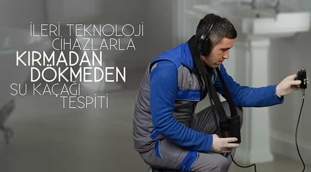
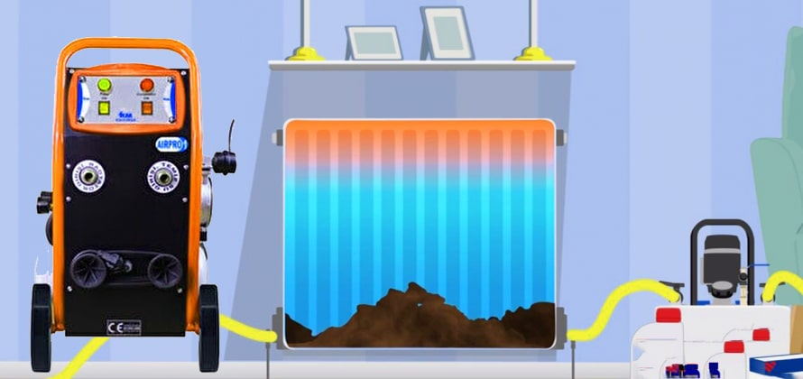
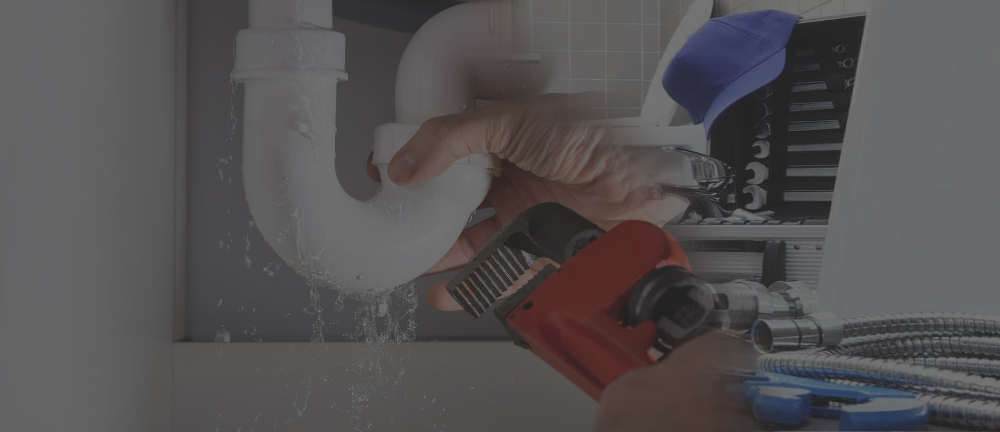

01 / TESPİT
Su Kaçağı Tespiti
Kaçağın kaynağını belirlemeye yönelik profesyonel tespit hizmeti.
Hizmeti inceleİSTANBUL GENELİ PROFESYONEL TESİSAT HİZMETİ
Su kaçağı tespiti, gider ve tıkalı boru açma, petek temizliği ve tesisat onarımı için Ferhat Su Tesisat yanınızda.
HİZMETLERİMİZ
İhtiyacınıza uygun hizmeti seçin; detayları inceleyin veya sorununuzu görüşmek için bizi arayın.

Kaçağın kaynağını belirlemeye yönelik profesyonel tespit hizmeti.
Hizmeti inceleSu akışını engelleyen tıkanıklıklar için uygun çözümün belirlenmesi.
Hizmeti incele
Isıtma sisteminizin bakım ihtiyacı için petek temizliği hizmeti.
Hizmeti inceleArızalı klozet ve bağlantılar için tamir ya da değişim desteği.
Hizmeti inceleEv ve iş yerlerindeki su tesisatı sorunları için onarım desteği.
Bilgi almak için arayın
HAKKIMIZDA
Ferhat Su Tesisat, 2011 yılından bu yana İstanbul'da su tesisatı ve bakım hizmetleri sunuyor. Sorununuzu dinleyip uygun müdahaleyi belirlemeye, işi özenle tamamlamaya önem veriyoruz.
NASIL ÇALIŞIYORUZ
İlk görüşmeden müdahaleye kadar ihtiyacınızı birlikte netleştiriyoruz.
Telefonla arayın veya WhatsApp'tan yazın.
Yaşadığınız durumu ve konumunuzu paylaşın.
Uygun hizmet ve sonraki adım hakkında konuşalım.
Ekibimiz tesisat sorununu gidermek için çalışsın.
TAMAMLANAN İŞLER
Gerçek proje fotoğrafları ve iş detayları paylaşılmaya başladığında bu alan düzenli olarak güncellenecek.
Her kayıt; işlem öncesi ve sonrası fotoğrafları, verilen hizmet, ilçe ve kısa açıklamayla yayınlanacak.
MÜŞTERİ DENEYİMLERİ
Doğrulanmış müşteri değerlendirmeleri yayınlanmaya başladığında burada görünecek.
Bu alanda henüz yayınlanmış bir müşteri değerlendirmesi bulunmuyor.
Değerlendirmeler yayınlanmadan önce kontrol edilir.Google yorumları ve web sitesi üzerinden alınan değerlendirmeler; ad, tarih, puan ve hizmet bilgisiyle burada yayınlanabilecek şekilde planlandı.
İLETİŞİM
İstanbul genelindeki tesisat hizmetlerimiz için doğrudan bizimle görüşün.